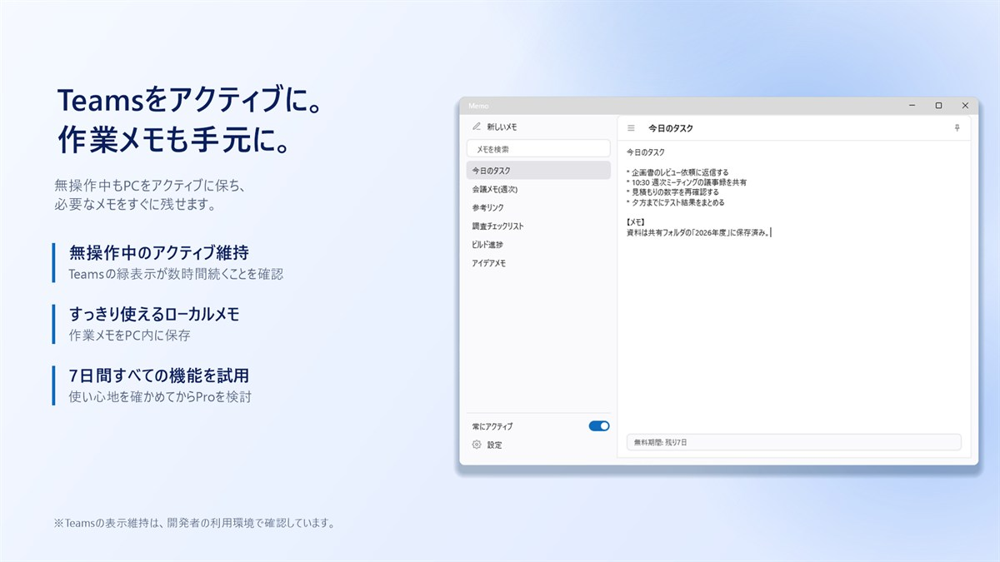

最終更新: 2026年11月27日
Teamsが「退席中」になるのはなぜ
Microsoftの資料では、PCで数分操作がない状態が続く、またはPCがロックされると「退席中」になり、PCがスリープすると「オフライン」になるとされています（Microsoft Learn（英語））。資料を読む、動画を見る、処理を待つなど、マウスやキーボードを使わない作業のあいだも、この条件に当てはまります。
退席中を減らす主な方法
- ステータスメッセージで状況を伝える。表示が変わっても、相手が誤解しにくくなります。
- 予定表に予定を入れる。理由のある状態として、周りに伝わります。
- PCの画面オフ・スリープ・ロックまでの時間を、組織のポリシーの範囲で調整する。
- 席にいる間はPCをアクティブに保つソフトを使う（ActiveMemoなど）。
会社のPCでは、ソフトのインストールや自動操作が制限されていることがあります。まず、組織のルールを確認してください。
ActiveMemoで、席にいる間をアクティブに
ActiveMemoは、無操作中のPCをアクティブに保つ「Keep Active」と、すぐ使えるローカルメモをひとつにしたWindowsアプリです。
- Microsoft StoreからActiveMemoをインストールします。
- 起動すると、Keep Activeは最初からオンです。画面左下のスイッチで、いつでもオン／オフできます。
- 最小化しても続きます。Ctrl + Alt + Spaceで、ウィンドウを最小化・復元できます。
- 席にいる間に思いついたことは、そのままメモに書けます。
開発者の利用環境では、数時間マウスやキーボードを操作しない状態でも、Teamsの緑表示が続くことを確認しています。お使いの環境や組織の設定によって、結果は変わる場合があります。

他のツールとの使い分け
| 項目 | ActiveMemo | PowerToys Awake | USB機器タイプ |
|---|---|---|---|
| 主な目的 | 席にいる間PCをアクティブに保つ。ローカルメモつき | 電源とスリープの設定を変えずに、PCを起動し続ける（Microsoftのユーティリティ） | カーソルを動かして、PCが放置状態に見えないようにする |
| 入手方法 | Microsoft Storeからインストール | PowerToysに含まれる | 購入して、PCに挿す |
| Teamsの表示について | 開発者の環境で、緑表示が続くことを確認 | PCを眠らせない目的で紹介されています。Teamsの表示を保つことを目的にした案内は、見つけられていません | 用途として挙げられることが多い |
「PCを眠らせたくないだけ」なら、PowerToys Awakeで足りることがあります。それで足りる人は、Awakeで十分です。
ActiveMemoにできないこと（先にお伝えします）
ご利用前に
- PCがスリープしているときや、画面がロックされているときは、Keep Activeは働きません。
- ウィンドウの×ボタンでアプリを終了すると、Keep Activeも止まります。
- Teamsなどの表示の続き方は、お使いの環境や組織の設定によって変わる場合があります。
- 勤務先・所属組織のルールに従ってお使いください。勤務状況を偽る目的での利用はおすすめしません。
よくある質問
Teamsを「連絡可能」のまま完全に固定できますか？
できると約束することはできません。ActiveMemoは、席にいる間のPCをアクティブに保つためのアプリで、Teamsの表示を保証するものではありません。
席を離れても大丈夫ですか？
PCがスリープしているときや、画面がロックされているときは働きません。席を離れる際の扱いは、勤務先のルールに従ってください。
無料で使えますか？
初回起動から7日間は、すべての機能を無料で試せます。そのあとも続けて使うには、ActiveMemo Pro（サブスクリプション）が必要です。Proにしない場合も、今あるメモの閲覧・コピー・エクスポートは使えます。